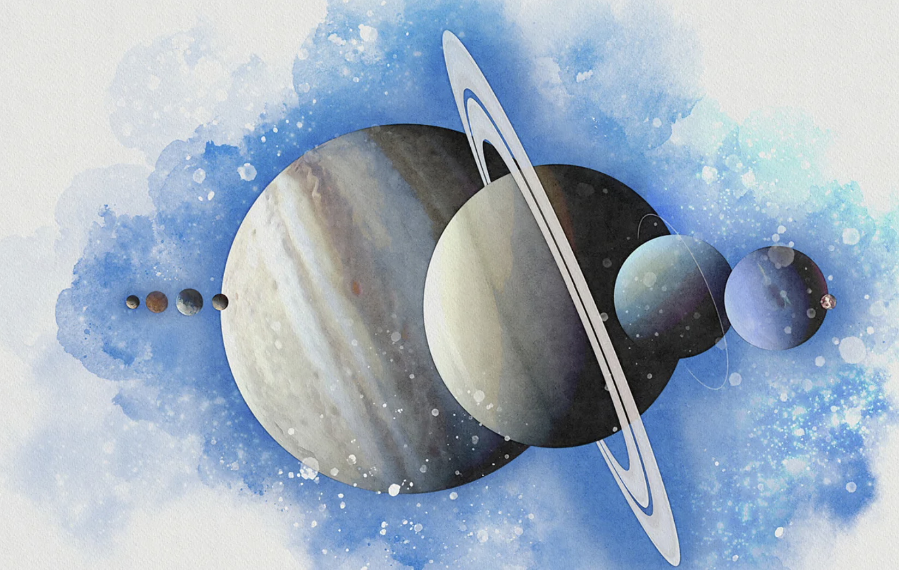

Peer up at the sky on a clear night this January and February and you could be in for a treat. Six planets – Venus, Mars, Jupiter, Saturn, Uranus and Neptune – are currently visible in the night sky. During just one night in late February, they will be joined by Mercury, a rare seven-planet alignment visible in the sky.
But such events are not just a spectacle for stargazers – they can also have a real impact on our Solar System and offer the potential to gain new insights into our place within it. The eight major planets of our Solar System orbit the Sun in the same flat plane, and all at different speeds. Mercury, the closest planet to the Sun, completes an orbit – a year for the planet – in 88 days. Earth's year, of course, is 365 days, while at the upper end, Neptune takes a whopping 60,190 days, or about 165 Earth years, to complete a single revolution of our star.
The different speeds of the planets mean that, on occasion, several of them can be roughly lined up on the same side of the Sun. From Earth, if the orbits line up just right, we can see multiple planets in our night sky at the same time. In rare events, all the planets will line up such that they all appear in our night sky together along the ecliptic, the path traced by the Sun.
Mercury, Venus, Mars, Jupiter and Saturn are all bright enough to be visible to the naked eye, while Uranus and Neptune require binoculars or a telescope to spot.
In January and February, we can witness this event taking place. The planets are not exactly lined up, so they will appear in an arc across the sky due to their orbital plane in the Solar System. During clear nights in January and February, all of the planets except Mercury will be visible – an event sometimes called a planetary parade. On 28 February, though – weather permitting – all seven planets will be visible, a great spectacle for observers on the ground.
"There is something special about looking at the planets with your own eyes," says Jenifer Millard, a science communicator and astronomer at Fifth Star Labs in the UK. "Yes, you can go on Google and get a more spectacular view of all these planets. But when you're looking at these objects, these are photons that have travelled millions or billions of miles through space to hit your retinas."
19.1.2025
Visit BBC Original Page